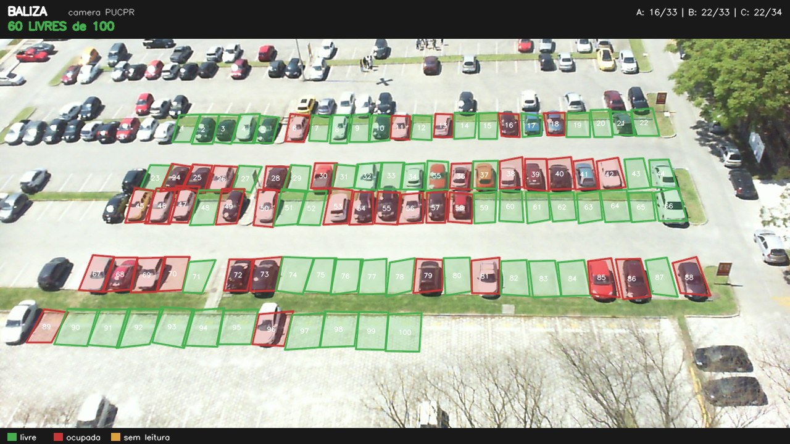
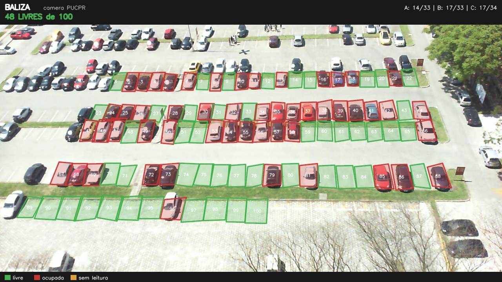
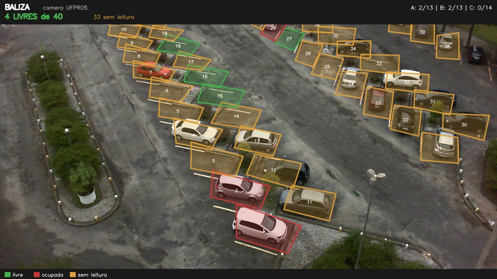
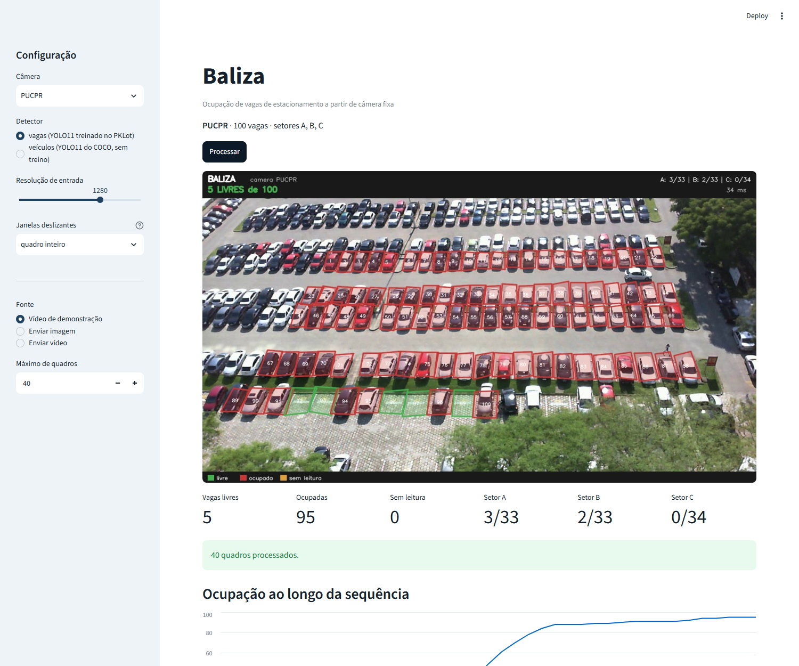

Ocupação de vagas de estacionamento por câmera, sem um sensor em cada vaga
Estacionamento grande tem dois problemas que se alimentam: o motorista não sabe onde há vaga e a administração não sabe onde falta. A resposta usual, um sensor dentro de cada vaga, resolve com precisão e cobra um dispositivo, um cabo ou uma bateria por vaga. O Baliza parte de outro lugar: a câmera já está instalada por causa da segurança, e um único quadro dela enquadra dezenas de vagas ao mesmo tempo.
Esta entrega não é só planejamento. O sistema está construído e medido sobre a base pública PKLot, produzida em estacionamentos da UFPR e da PUCPR. O que o projeto descobriu no caminho é o que dá forma a este documento: o caminho fácil funciona muito bem em uma câmera próxima e falha de um jeito perigoso em uma câmera distante, e é esse fracasso que justifica treinar um modelo próprio.
| Nome do projeto | Baliza — monitoramento de ocupação de vagas de estacionamento por visão computacional |
| Integrantes | Fabrício Júnio Almeida Dias Camila Pereira Raimundo Luan Miranda Padilha Kauã Limão Nunes |
| Curso | Bacharelado em Ciência da Computação — UNISAGRADO |
| Turma | 6º semestre — 2026/2 |
| Disciplina | Visão Computacional |
| Data de entrega | 25 de setembro de 2026 |
| Código | github.com/fabriciojunio/baliza |
O sistema responde, a cada leitura e para cada vaga coberta pela câmera, uma pergunta binária: tem veículo aqui ou não tem? A partir dela entrega o que interessa a quem usa e a quem administra o pátio: quantas vagas livres existem em cada setor agora, onde elas estão, e como a ocupação variou ao longo do dia.
Não se trata de identificar quem estacionou nem de ler placa. A unidade de análise é a vaga, e essa escolha é deliberada: mantém o escopo no tamanho de um semestre e evita tratar dado pessoal, assunto da seção 6.4.
Procurar vaga é trânsito que não vai a lugar nenhum. A revisão de Shoup (2006) reuniu dezesseis estudos feitos entre 1927 e 2001 em onze cidades de quatro continentes e encontrou, em média, 30% dos carros em circulação em áreas centrais congestionadas rodando à procura de vaga, com variação grande entre os casos, de 8% a 74%. O número costuma ser citado sem essa ressalva, como se valesse para o trânsito urbano inteiro, o que não é verdade: ele vale para vias centrais onde a vaga de rua é barata e disputada. Ainda assim a ordem de grandeza sustenta o argumento, e o mesmo efeito reaparece em escala menor dentro de um pátio fechado de shopping, hospital ou campus, na forma de fila na cancela e de volta no corredor.
Para quem administra o pátio o custo é outro e igualmente concreto: sem medição, o dimensionamento é feito no olho. Não se sabe qual setor satura primeiro, a que horas, nem se convém redistribuir vagas entre visitante e funcionário.
| Beneficiário | O que ganha |
|---|---|
| Motorista | Sabe antes de entrar, ou logo na entrada, quantas vagas restam e em qual setor. Deixa de circular procurando. |
| Administração do estacionamento | Ocupação medida por hora e por setor, base para decidir sinalização, tarifa e redistribuição de vagas. |
| Instituição (campus, hospital, shopping) | Dado objetivo sobre o horário de pico, útil para escalonar horários e para justificar ampliação. |
| Portaria e segurança | Uma tela a mais sobre o circuito de câmeras que já existe, sem nada novo no piso. |
| Solução atual | Como funciona | Limitação |
|---|---|---|
| Contagem na cancela | Conta entradas e saídas e mostra um total de vagas livres no letreiro. | Sabe o total, nunca a localização. O erro acumula ao longo do dia e só zera quando o pátio esvazia. |
| Sensor por vaga | Sensor ultrassônico no teto ou magnético embutido no piso, um por vaga, com indicador luminoso. | Precisão alta e custo proporcional ao número de vagas: um dispositivo, cabeamento ou bateria e manutenção para cada uma. |
| Nenhuma | O motorista descobre circulando; a administração estima de memória. | É o caso mais comum, inclusive em estacionamentos grandes de Bauru. |
A oportunidade da visão computacional está no meio termo: uma câmera de segurança comum já enquadra dezenas de vagas, e em boa parte dos pátios ela já está instalada e ligada. O custo marginal de extrair ocupação desse vídeo é software, não obra. O preço a pagar é técnico, e o projeto trata dele de frente: oclusão, sombra, chuva e, principalmente, distância da câmera.
Desenvolver um sistema de visão computacional que, a partir do vídeo de uma câmera fixa, classifique cada vaga de estacionamento como livre ou ocupada, apresente o resultado em uma interface web e registre o histórico de ocupação, funcionando em hardware doméstico e sem qualquer sensor instalado no pátio.
A regra que orientou a escolha foi conservadora: preferir o que roda em uma GTX 1650 de 4 GB, o que tem documentação estável e o que o grupo já usou antes. Não há nesta lista nenhuma tecnologia que dependa de crédito pago em nuvem ou de hardware que não esteja em mãos. Tudo abaixo está instalado e em uso; não é lista de intenção.
| Tecnologia | Finalidade no projeto | Justificativa da escolha |
|---|---|---|
| Python 3.12 | Linguagem de todo o sistema, do treino à interface. | É onde vive o ecossistema de visão computacional. A 3.14, que já está na máquina, ainda não tem roda do PyTorch, e isso decidiu a versão. |
| OpenCV 4.12 | Leitura de vídeo e câmera, recorte, desenho das vagas e do placar sobre o quadro. | Padrão de fato para captura e manipulação de quadro. Fixado na série 4.x: a 5.0 removeu APIs clássicas que ainda usamos. |
| Ultralytics 8.4 / YOLO11n | Detector, nas duas modalidades: veículo (pesos do COCO) e vaga (pesos treinados por nós). | Versão madura, com receita de treino estável. O yolo11n tem 2,6 M de parâmetros e 6,5 GFLOPs, cabe nos 4 GB e roda em tempo real. |
| PyTorch 2.11 + CUDA 12.8 | Backend de treino e de inferência em GPU. | Dependência do Ultralytics. A roda de CPU que vem por padrão no Windows treina, mas em ordens de grandeza a mais de tempo; a versão com CUDA foi instalada de propósito. |
| SQLite | Histórico de leituras: câmera, vaga, estado, confiança, cobertura e instante. | Banco em arquivo único, sem servidor para instalar. O volume previsto é trivial para ele e o arquivo acompanha a demonstração. |
| Streamlit | Painel web: escolha da câmera, envio de imagem ou vídeo, quadro anotado, contagem por setor e curva do dia. | Interface utilizável escrita em Python puro, sem HTML nem rota. Flask exigiria template e front separados para o mesmo resultado. |
| pytest | 107 testes sobre geometria, decisão de ocupação, suavização, persistência, captura e linha de comando. | Sem teste, regressão em código de visão passa despercebida: o programa continua rodando e só o número muda. |
| Git e GitHub | Versionamento, revisão entre os integrantes e distribuição dos pesos por release. | Os pesos treinados têm alguns megabytes e não entram no repositório; vão por release, como o grupo já fez em projeto anterior. |
| Google Colab | Plano B de treino, com GPU T4 gratuita. | Não foi necessário: o treino coube na máquina local. Fica registrado como saída caso um experimento maior não caiba na VRAM. |
| Alternativa | Por que ficou de fora |
|---|---|
| YOLO26 (jan/2026) | É mais novo, mais leve (2,4 M de parâmetros, 5,5 GFLOPs) e traz inferência sem NMS, com 40,9 de mAP contra 39,5 do YOLO11n no COCO. Fica como experimento comparativo até a entrega final: material de apoio e resposta a problema de treino ainda são mais escassos que os do YOLO11, e o cronograma não sobreviveria a uma surpresa de ferramenta. |
| YOLO12 | A própria Ultralytics recomenda YOLO11 ou YOLO26 para produção, por instabilidade de treino e consumo de memória maior. Em 4 GB de VRAM isso decide. |
| Segmentação semântica | Resolveria o problema, mas exige máscara por vaga na anotação. O PKLot vem em polígono de quatro pontos; a resposta que se quer é binária, e a máscara não a melhora. |
| Subtração de fundo | É barata e o grupo já a implementou em projeto anterior. Ela responde "isso se moveu?", e carro parado há três horas não se move: para ocupação de vaga a pergunta está errada desde o começo. |
| Raspberry Pi | Nenhum integrante tem a placa, e comprar cria dependência de prazo. O sistema roda em PC; a portabilidade para borda fica como trabalho futuro, com o modelo exportável em ONNX por um comando. |
O sistema é um laço de cinco estágios. O estágio que costuma faltar em proposta de projeto, e que aqui é explícito, é o de decisão temporal: uma leitura isolada oscila, e o que vai para a tela precisa ser estável.
Entrada. Três fontes, o mesmo código: câmera ao vivo por RTSP ou USB, arquivo de vídeo e imagem ou pasta de imagens. No Windows a abertura da câmera tenta Media Foundation, depois DirectShow e por fim o padrão do sistema, e só aceita o backend que realmente entregar um quadro, porque abrir sem falhar não garante que venha imagem.
Pré-processamento. Estacionamento muda devagar. Processar trinta quadros por segundo é desperdício, então o sistema aceita um intervalo entre leituras e reserva a taxa cheia para a demonstração. O quadro vai para o modelo a 1280 pixels com letterbox, preservando a proporção. Opcionalmente é recortado em uma grade de janelas com sobreposição, recurso que a seção 7.4 mede.
Detecção. Um dos dois detectores. O de veículos devolve carro, moto, ônibus e caminhão; o de vagas devolve a vaga já rotulada. Nos dois casos o resultado é uma lista de caixas com classe e confiança, e o cruzamento com o mapa de vagas acontece depois, no mesmo lugar.
Decisão. O estado publicado de uma vaga é o voto da maioria das cinco últimas leituras. Isso custa alguns segundos de atraso na troca de estado, irrelevante para estacionamento, e elimina o pisca-pisca causado por pedestre, farol e pássaro.
A separação segue o que já deu certo em projetos anteriores do grupo: o núcleo de visão não conhece a interface, e a interface não conhece o modelo.
| Módulo | Responsabilidade |
|---|---|
| baliza/geometria.py | Interseção entre o polígono da vaga e a caixa do detector, por recorte de Sutherland-Hodgman. |
| baliza/mapa.py | Carrega, valida e grava o mapa de vagas; divide o pátio em setores. |
| baliza/pklot.py | Leitura da base: varredura das pastas, contorno das vagas e rótulo verdadeiro. |
| baliza/deteccao.py | Os dois detectores e a variante em janelas, mais a supressão de sobreposição. |
| baliza/ocupacao.py | Regra de decisão: cobertura da vaga ou IoU, conforme o detector. |
| baliza/suavizacao.py | Voto de maioria das últimas leituras, e registro.py, que grava o histórico em SQLite e exporta em CSV. |
| baliza/captura.py | Fontes de quadro (câmera, vídeo, imagem, pasta) e desenho.py, que anota o quadro. |
| baliza/sistema.py | O laço que junta tudo. |
| painel/app.py | Streamlit. Só chama o núcleo e desenha a tela. |
| treino/ | Divisão da base, calibração, exportação para YOLO, treino, avaliação, figuras e pacote de demonstração. Fora do pacote instalável. |
PKLot é a base principal e a escolha quase óbvia para este problema. Foi produzida por Almeida et al. (2015) na Universidade Federal do Paraná e na PUC do Paraná, em Curitiba, com fotos tiradas de cinco em cinco minutos ao longo de meses, em dias de sol, nublados e de chuva. São 12.417 imagens de pátio e 695.899 recortes de vaga conferidos e rotulados um a um, com 337.780 ocupados e 358.071 livres, distribuição praticamente equilibrada. Ser brasileira não é detalhe estético: os carros, a pintura do solo e a luz são os daqui.
O pacote tem 4,9 GB, é aberto e não exige cadastro. Baixamos do servidor da própria UFPR e extraímos apenas as fotos de pátio inteiro com os XMLs, descartando os recortes já segmentados, que servem à abordagem de classificação e não à de detecção. A licença é CC BY 4.0 e exige citar o artigo original, o que a seção 12 faz.
Cada foto vem com um XML que traz, para cada vaga, um quadrilátero de quatro pontos e o atributo de ocupação. É daí que sai, de graça, o mapa de vagas de cada câmera: não foi preciso demarcar vaga nenhuma à mão para trabalhar com esta base.
| Estacionamento | Fotos | Vagas por foto | Característica da câmera |
|---|---|---|---|
| UFPR04 | 3.791 | 28 | Quarto andar, pátio próximo. Carro grande no quadro. |
| UFPR05 | 4.152 | 40 | Quinto andar, ângulo mais aberto. |
| PUCPR | 4.474 | 100 | Décimo andar, pátio grande e distante. Carro com poucas dezenas de pixels. |
| Total | 12.417 | — | 12.416 XMLs, 2 classes (vaga-livre e vaga-ocupada), anotação em polígono de quatro pontos |
Tabela 3. Contagem feita na base extraída, não copiada do artigo. A diferença de uma unidade entre fotos e XMLs está na base original.
Achado no tratamento: 274 dos 12.416 XMLs (2,2%) trazem vagas sem o atributo de ocupação. São dias inteiros anotados pela metade. O sistema descarta essas fotos em vez de adivinhar o rótulo: incluí-las com um chute inflaria ou afundaria qualquer métrica sem que ninguém percebesse.
A esse conjunto se soma a captura própria, cerca de 300 fotos de um estacionamento de Bauru, tiradas de ponto alto e fixo em três horários. Ela ainda não foi feita (está no cronograma para outubro) e é a base que responde à pergunta que de fato interessa, porque é uma câmera, uma perspectiva e uma pintura de solo que o modelo nunca viu. Enquanto ela não existe, o papel de "câmera nunca vista" é da UFPR05, como explica a divisão abaixo.
Este é o ponto onde o projeto poderia se enganar sozinho, e por isso ele vem antes do aumento de dados. Fotos tiradas de cinco em cinco minutos da mesma câmera no mesmo dia são quase idênticas. Com divisão aleatória, o quadro das 10h05 cai no treino e o das 10h10 no teste, o modelo acerta quase tudo e o número não descreve nada. A divisão é por câmera e por dia:
As imagens são 1280 por 720. Vão para o modelo a 1280 pixels com letterbox, preservando proporção, e os pixels normalizados para o intervalo de 0 a 1. O mesmo caminho vale no treino e na inferência, sem exceção: divergência entre os dois é a fonte clássica de modelo que vai bem na validação e mal na tela. A resolução aqui não é detalhe: num teste inicial, a mesma amostra de UFPR04 saiu com 80,2% de acerto a 640 pixels e 99,4% a 1280, porque a 640 o carro encolhe abaixo do que o detector consegue enxergar.
O PKLot já traz sol, nuvem e chuva, então o aumento não precisa inventar clima, e sim cobrir o que falta:
| Transformação | Faixa | Motivo |
|---|---|---|
| Mosaico | sempre | Padrão do treinador. Ajuda em objeto pequeno, que é exatamente o caso da vaga distante. |
| Espelhamento horizontal | 50% | Dobra a variação de perspectiva sem custo. Vertical não entra: não existe pátio de cabeça para baixo. |
| Rotação | ±5° | Compensa tripé torto. Mais que isso é irreal para câmera parafusada em parede. |
| Matiz | ±1,5% | Balanço de branco varia entre modelos de câmera. |
| Saturação e brilho | ±40% | Câmera diferente expõe diferente, e a webcam do grupo não permite travar exposição. |
O aumento incide apenas no treino. Validação e teste ficam intocados, senão a medição deixa de descrever o mundo.
Imagem de pátio pode conter placa e, eventualmente, rosto de quem passa. Placa identifica pessoa por caminho indireto, então o projeto adota três regras desde o primeiro dia, e não como remendo no fim: a captura própria será feita de ângulo alto, onde a placa fica ilegível; imagens publicadas no repositório passam por borramento de placa; e o sistema em operação não grava quadro nenhum em disco, apenas a linha de estado da vaga no banco. O vídeo anotado só existe quando alguém pede explicitamente, com --gravar.
Detecção de objetos. O modelo localiza objetos no quadro e os rotula, e a posição importa: o painel precisa dizer onde está a vaga livre, não apenas quantas existem. Há classificação embutida, mas o problema não é de classificação pura.
O projeto testa duas formas de chegar à resposta, e a diferença entre elas é qual pergunta se faz à imagem.
| Critério | Detector de veículos (sem treino) | Detector de vagas (treinado) |
|---|---|---|
| Pergunta que faz | "Onde estão os carros?" Depois cruza com o mapa de vagas. | "Onde estão as vagas, e quais estão ocupadas?" |
| Pesos | YOLO11n do COCO, prontos. | YOLO11n ajustado no PKLot, 2 classes. |
| Custo para começar | Zero. Funciona em qualquer pátio no mesmo dia. | Um treino, e uma base anotada para treinar. |
| Vaga vazia | Conclui "livre" por ausência de detecção. | Afirma "livre" porque viu a vaga vazia. |
| Câmera nova | Só precisa do mapa de vagas. | Depende de quanto a nova câmera se parece com as do treino. |
O detector devolve caixas alinhadas aos eixos; a vaga do PKLot é um quadrilátero girado. Para cruzar os dois, o sistema recorta um contra o outro com o algoritmo de Sutherland-Hodgman (1974) e mede a área exata da interseção. A decisão usa a fração da vaga coberta, e não a IoU, por um motivo concreto: um caminhão que transborda a vaga continua ocupando a vaga, e a IoU desaba justamente nesse caso, porque a união fica enorme. No teste automatizado, um veículo três vezes maior que a vaga dá cobertura 1,00 e IoU abaixo de 0,05.
Quanto da vaga precisa estar coberta para chamá-la de ocupada? O valor foi escolhido varrendo o conjunto de validação, com a cobertura de cada vaga calculada uma vez e os limiares aplicados depois sobre o que já estava medido. Foram 6.886 vagas de 120 fotos.
| Limiar | 0,10 | 0,20 | 0,30 | 0,40 | 0,50 | 0,60 | 0,70 | 0,80 |
|---|---|---|---|---|---|---|---|---|
| Acurácia | 71,7% | 72,7% | 73,1% | 73,3% | 73,3% | 73,0% | 71,6% | 65,9% |
| Falso ocupado | 4,6% | 1,7% | 0,7% | 0,3% | 0,1% | 0,1% | 0,0% | 0,0% |
| Falso livre | 54,1% | 55,0% | 55,3% | 55,3% | 55,4% | 56,1% | 59,2% | 70,9% |
Tabela 5. Varredura do limiar de cobertura na validação, com o detector de veículos sem treino. A curva é chata entre 0,30 e 0,50; adotamos 0,30.
A conclusão que interessa não é qual limiar venceu, e sim que nenhum limiar resolve o problema. O falso livre fica acima de 54% em toda a faixa, e mexer no limiar apenas troca um erro pelo outro. Quando a calibração de um parâmetro não muda a ordem de grandeza do erro, o parâmetro não é a causa. A causa estava em outro lugar, e a seção seguinte mostra onde.
Separando o mesmo experimento por estacionamento, o número médio se desfaz em dois números que não têm nada a ver um com o outro:
| Estacionamento | Vagas por foto | Acurácia | Falso livre | Falso ocupado |
|---|---|---|---|---|
| UFPR04 (câmera próxima) | 28 | 98,2% | 2,2% | 1,3% |
| PUCPR (décimo andar) | 100 | 62,9% | 80,7% | 0,5% |
Tabela 6. Detector de veículos sem treino, validação, limiar 0,30. O mesmo sistema, no mesmo dia, com o mesmo código.
O motivo é de tamanho, não de dificuldade conceitual. Na PUCPR a câmera está no décimo andar e um carro ocupa poucas dezenas de pixels; o detector treinado no COCO simplesmente não o vê, e vaga sem detecção vira "livre" por ausência. É por isso que o erro se concentra todo no lado caro: quatro em cada cinco vagas ocupadas são anunciadas como livres.

Se o problema é tamanho, uma saída barata é recortar o quadro em janelas com sobreposição e rodar o detector em cada uma na resolução cheia, o que aumenta o carro em proporção. As janelas vão em lote para a GPU, então o custo real fica abaixo do proporcional.
| Grade de janelas | Acurácia (PUCPR) | Falso livre | ms por quadro |
|---|---|---|---|
| Quadro inteiro | 66,5% | 78,6% | 173 |
| 2 x 2 | 81,5% | 43,2% | 246 |
| 3 x 2 | 84,8% | 35,3% | 349 |
| 4 x 3 | 78,9% | 49,1% | 535 |
Tabela 7. Efeito das janelas deslizantes na câmera distante.
O ganho é grande e insuficiente. Dezoito pontos de acurácia por recortar a imagem confirmam o diagnóstico, e a grade 4x3 piorando em relação à 3x2 mostra o limite do truque: janela pequena demais corta carros na borda e multiplica detecção repetida, que a supressão de sobreposição precisa desfazer. Mesmo na melhor grade, um terço das vagas ocupadas ainda é anunciado como livre, o que é inaceitável para quem vai dirigir até lá.
Se o detector geral não sabe o que é um carro de vinte pixels visto do décimo andar, a saída é ensinar. Partimos dos pesos do COCO e ajustamos o yolo11n para duas classes, vaga-livre e vaga-ocupada, usando 971 imagens de treino e 278 de validação, todas da divisão por câmera e por dia da seção 6.3.
| Parâmetro | Valor | Por quê |
|---|---|---|
| Resolução | 1280 x 1280 | Resolução nativa da base. A 640 a vaga distante desaparece. |
| Lote | 4 | Limite da VRAM de 4 GB, não da teoria. |
| Épocas | 30 | Cerca de 9 minutos cada, 4 h 15 no total. |
| Aumento | mosaico, espelhamento, ±5°, HSV | Câmera parafusada não gira; rotação grande ensinaria o que nunca aparece. |
| Semente | 42, fixa | Para o experimento poder ser repetido. |
Na validação o resultado é forte e rápido de descrever: mAP@0,5 de 0,989 e mAP@0,5:0,95 de 0,852, com precisão de 0,966 e revocação de 0,995 sobre 17.108 vagas. A curva subiu de 0,953 já na primeira época e o ganho das vinte épocas finais foi quase todo em mAP@0,5:0,95, ou seja, em encaixe da caixa, não em achar a vaga.
Com os três caminhos prontos, a comparação é direta. Duas colunas de acurácia aparecem de propósito: a primeira ignora a vaga que o modelo não conseguiu ler, que é como a métrica costuma ser publicada, e a segunda conta a vaga não lida como erro, que é o que o motorista sente quando o painel não sabe responder.
| Configuração | Acurácia (lidas) | Acurácia (todas) | Falso livre | Sem leitura | ms/quadro |
|---|---|---|---|---|---|
| Validação — PUCPR e UFPR04, dias que o modelo nunca viu | |||||
| Veículos, quadro inteiro | 70,2% | 70,2% | 60,8% | 0,0% | 72 |
| Veículos, janelas 3x2 | 87,7% | 87,7% | 24,7% | 0,0% | 200 |
| Vagas, treinado | 100,0% | 100,0% | 0,1% | 0,0% | 26 |
| Teste — UFPR05, uma câmera que nenhum modelo viu | |||||
| Veículos, quadro inteiro | 98,1% | 98,1% | 2,9% | 0,0% | 27 |
| Veículos, janelas 3x2 | 99,2% | 99,2% | 0,9% | 0,0% | 202 |
| Vagas, treinado | 99,5% | 25,6% | 0,0% | 74,3% | 25 |
Tabela 9. Sessenta fotos por conjunto, entrada de 1280 px, medido por treino/relatorio.py.
O modelo treinado ganha de longe na câmera que viu e desaba na câmera que não viu. Na validação ele vai de 70,2% para 100,0% e reduz o falso livre de 60,8% para 0,1%. No teste, a mesma linha mostra 99,5% se olharmos só as vagas que ele leu, e 25,6% quando a vaga não lida conta como erro: ele deixou de ler 74,3% das vagas da UFPR05.
Diagnosticando em oito fotos de cada lado, o quadro fica nítido. Nas câmeras do treino o modelo devolve 589 detecções para 583 vagas, com IoU mediana de 0,746 contra o contorno verdadeiro. Na UFPR05 devolve 112 detecções para 319 vagas, IoU mediana de 0,052, e 101 vagas sem nenhuma sobreposição. Ele não aprendeu a reconhecer vaga: aprendeu a geometria daqueles dois pátios.


A conclusão de engenharia inverteu o palpite inicial. O modelo treinado não substitui o detector geral: os dois resolvem problemas diferentes. O detector de veículos é agnóstico à câmera e serve para apontar em qualquer pátio no primeiro dia; o treinado é imbatível onde foi treinado e imprestável fora. Por isso o Baliza mantém os dois, escolhidos por uma opção de linha de comando, e o padrão é o genérico. É também por isso que a captura própria de Bauru, no cronograma de outubro, deixou de ser um detalhe de validação e passou a ser a condição para usar o modelo treinado em qualquer pátio novo.
Tudo o que a tabela abaixo marca como disponível foi usado de verdade nesta etapa. O projeto não depende de nenhuma compra.
| Item | Descrição | Disponível? | Uso no projeto |
|---|---|---|---|
| Computador | Desktop Ryzen 3 3200G, 16 GB DDR4, SSD 480 GB e HD de 1 TB | Sim | Treino, inferência e desenvolvimento |
| GPU | NVIDIA GeForce GTX 1650, 4 GB GDDR6, driver 610.88, CUDA 12.8 | Sim | Treino do YOLO11n e inferência em tempo real |
| Webcam | Webcam USB comum, sem controle de exposição nem de balanço de branco | Sim | Demonstração ao vivo em sala |
| Câmera | Câmera de celular em apoio fixo, para a captura em Bauru | Sim | Base própria de teste, em outubro |
| Armazenamento | 4,9 GB do pacote compactado e 3,9 GB das fotos extraídas | Sim | Base PKLot completa em disco |
| Raspberry Pi | Não previsto nesta etapa | Não | Trabalho futuro, com o modelo exportável em ONNX |
| Arduino | Não se aplica | Não | O projeto não tem atuador nem sensor físico |
| Impressora 3D | Não necessária | Não | Apoio de câmera resolvido com tripé |
| Serviços em nuvem | Google Colab (GPU T4 gratuita) e GitHub | Sim | Plano B de treino, que não foi preciso usar, e versionamento |
| Câmera IP fixa | Câmera de segurança com RTSP em estacionamento de terceiro | Não | Ver observação abaixo |
O único item ausente que importa é a câmera IP fixa em um estacionamento real, e ela não bloqueia nada: a base pública cobre o treino e a captura própria cobrirá o teste. Se sair autorização para apontar uma câmera para o estacionamento do campus por alguns dias, o sistema ganha uma demonstração ao vivo; se não sair, a demonstração usa vídeo gravado do mesmo pátio, que é como boa parte do trabalho publicado na área é avaliada. A solicitação será feita na primeira semana de outubro, cedo o bastante para que uma recusa não atrapalhe o cronograma.
| Tarefa | Onde | Tempo |
|---|---|---|
| Download da base (4,9 GB) | Rede local | cerca de 2 minutos |
| Calibração do limiar (120 fotos, 6.886 vagas) | GTX 1650 | 3 minutos |
| Treino do detector de vagas | GTX 1650 | cerca de 9 minutos por época |
| Inferência, quadro de 1280 px | GTX 1650 | 47 a 100 ms, ou seja 10 a 21 quadros por segundo |
| Inferência com janelas 3x2 | GTX 1650 | cerca de 350 ms por quadro |
| Suíte de testes (107 testes) | CPU | menos de 1 minuto |
Tabela 8. Custo em dinheiro: zero. Todo o software é livre ou tem plano gratuito suficiente, e o hardware já estava em casa.
Vale registrar um limite real da máquina: com lote de 4 imagens a 1280 pixels, o treino ocupa praticamente toda a VRAM de 4 GB e transborda para a memória do sistema. O script de treino cai de lote sozinho quando a memória estoura, em vez de morrer no meio da noite. E a GTX 1650 não tem núcleos tensores, então a precisão mista ajuda menos do que ajudaria numa placa mais nova: é por isso que a época leva nove minutos e não dois.
De setembro a dezembro de 2026. A ordem foi montada para que o maior risco, o modelo não generalizar para outra câmera, aparecesse cedo. Ele apareceu: está medido na seção 7 e já mudou o desenho do sistema.
| Atividade | Set | Out | Nov | Dez | Situação |
|---|---|---|---|---|---|
| Pesquisa, escopo e proposta (P1) | X | Concluído | |||
| Base: download, conversão e divisão por câmera | X | Concluído | |||
| Núcleo do sistema, com testes | X | Concluído, 107 testes | |||
| Detector sem treino e calibração do limiar | X | Concluído e medido | |||
| Treino do detector de vagas no PKLot | X | X | Primeira rodada feita | ||
| Painel web e histórico | X | X | Funcionando, falta refinar | ||
| Captura própria em Bauru e anotação | X | A fazer | |||
| Retreino incluindo a captura própria | X | A fazer | |||
| Comparação com YOLO26n | X | A fazer | |||
| Avaliação final e inspeção visual dos quadros | X | X | Parcial | ||
| Documentação, slides e ensaio da demonstração | X | A fazer |
O marco de setembro era ter o sistema rodando ponta a ponta sobre a base pública, com métrica nos três conjuntos e pacote de demonstração montado, e foi atingido. O de outubro é a captura de Bauru anotada e medida sem retreino, para conhecer o tamanho da queda em um pátio de verdade. O de novembro é o retreino com essas imagens e a comparação com o YOLO26n. Na entrega final tem que haver relatório, repositório organizado e demonstração ensaiada, funcionando sem internet.
A divisão segue o que cada um já fez em disciplinas anteriores, mas ninguém fica em uma caixa: a revisão de código é cruzada e todo integrante precisa conseguir rodar o sistema inteiro na própria máquina antes da entrega final. Isso é exigência, não formalidade, porque a demonstração acontece em um computador só.
| Integrante | Responsabilidade principal | Detalhe |
|---|---|---|
| Fabrício Júnio Almeida Dias | Arquitetura e núcleo de visão | Estrutura do repositório, geometria da vaga, detectores, regra de ocupação, suavização temporal, linha de comando e empacotamento. |
| Camila Pereira Raimundo | Base de dados e anotação | Leitura do PKLot, divisão por câmera e dia, captura em Bauru, anotação e política de aumento de dados. |
| Luan Miranda Padilha | Treino e avaliação | Exportação para o formato YOLO, execução dos treinos, calibração do limiar, métricas, matriz de confusão e comparação entre os modelos. |
| Kauã Limão Nunes | Interface, persistência e documentação | Painel Streamlit, banco SQLite, exportação em CSV, pacote de demonstração, README, relatório e slides. |
Combinados de trabalho: cada mudança entra por pull request com pelo menos um revisor; os testes rodam antes de cada entrega; e há um alinhamento curto por semana sobre o que travou.
Recebe vídeo de câmera fixa, ao vivo ou gravado, imagem avulsa ou pasta de fotos, e mantém na tela o pátio com cada vaga contornada em verde, vermelho ou laranja, o número de vagas livres por setor e a curva de ocupação da sequência, com o histórico gravado em banco local e exportável em CSV. O pacote de demonstração que acompanha o repositório traz três pátios, com o dia inteiro de cada um montado em vídeo a partir das fotos de cinco em cinco minutos, mais os mapas de vagas e os vídeos já anotados.

| Métrica | Meta | Atingido | Observação |
|---|---|---|---|
| mAP@0,5, validação | ≥ 0,90 | 0,989 | Detector treinado, 17.108 vagas |
| mAP@0,5:0,95, validação | ≥ 0,65 | 0,852 | Encaixe da caixa, métrica severa |
| Acurácia por vaga, câmera do treino | ≥ 95% | 100,0% | Detector treinado |
| Acurácia por vaga, câmera nunca vista | ≥ 85% | 98,1% | Detector de veículos, sem treino |
| Mesma métrica, detector treinado | ≥ 85% | 25,6% | Não generaliza; ver seção 7.6 |
| Falso livre, câmera nunca vista | ≤ 3% | 0,9% | Detector de veículos com janelas 3x2 |
| Velocidade, GPU | ≥ 15 q/s | 37 a 40 q/s | 25 a 27 ms por quadro, quadro inteiro |
| Cobertura de testes | ≥ 80% | 82% | 110 testes, sem contar os que carregam o modelo |
Das oito metas, sete foram atingidas e uma falhou, e a que falhou é a mais informativa do projeto. Vale registrar também que o detector de veículos não atinge a meta de 85% na PUCPR, onde fica em 62,8%: a meta só é alcançada ali com o modelo treinado. Nenhum dos dois caminhos, sozinho, cobre os dois casos.
Toda rodada de avaliação inclui a inspeção de quadros anotados, e não só a leitura da tabela: foi olhando a Figura 3 que a origem do erro da PUCPR ficou evidente em segundos, enquanto a média geral apenas dizia "73%".
O resultado prático é a demonstração de que um pátio de porte médio pode ter monitoramento de ocupação sem obra e sem sensor por vaga: a máquina usada processa cem vagas em 25 milissegundos, e para o campus a saída imediata seria saber a que horas o pátio satura e qual setor satura primeiro.
Até a entrega final ficam três frentes: a captura própria em Bauru, que agora tem peso maior porque é ela que dirá o tamanho da queda em um pátio de verdade; o retreino incluindo essas imagens, para medir quanto de generalização se compra com algumas centenas de fotos da câmera nova; e a comparação com o YOLO26n sob o mesmo protocolo.
| Risco | Chance | Plano |
|---|---|---|
| Modelo treinado não generalizar | Confirmado | Deixou de ser risco e virou resultado. O sistema mantém os dois detectores e usa o genérico por padrão. |
| Queda grande no pátio de Bauru | Média | Medir sem retreino, depois com retreino, e relatar as duas situações. |
| Autorização de câmera não sair | Média | Demonstração com vídeo gravado, que é como a avaliação da área costuma ser feita. |
| Oclusão em vaga distante | Média | Marcar as vagas do fundo como de baixa confiança e relatar métrica separada por faixa de distância. |
| Integrante indisponível | Baixa | Revisão cruzada e repositório único; ninguém é o único a saber rodar uma parte. |
ALMEIDA, P. R. L.; OLIVEIRA, L. S.; BRITTO JR., A. S.; SILVA JR., E. J.; KOERICH, A. L. PKLot: a robust dataset for parking lot classification. Expert Systems with Applications, v. 42, n. 11, p. 4937-4949, 2015. Base disponível em https://www.inf.ufpr.br/vri/databases/PKLot.tar.gz, licença CC BY 4.0.
AMATO, G.; CARRARA, F.; FALCHI, F.; GENNARO, C.; MEGHINI, C.; VAIRO, C. Deep learning for decentralized parking lot occupancy detection. Expert Systems with Applications, v. 72, p. 327-334, 2017.
SHOUP, D. Cruising for parking. Transport Policy, v. 13, n. 6, p. 479-486, 2006.
SHOUP, D. The high cost of free parking. Chicago: Planners Press, 2005.
ULTRALYTICS. YOLO11 documentation. Disponível em: https://docs.ultralytics.com/models/yolo11/. Acesso em: 23 set. 2026.
ULTRALYTICS. YOLO26: unified real-time end-to-end vision models. Disponível em: https://docs.ultralytics.com/models/yolo26/. Acesso em: 23 set. 2026.
SUTHERLAND, I. E.; HODGMAN, G. W. Reentrant polygon clipping. Communications of the ACM, v. 17, n. 1, p. 32-42, 1974.
BRADSKI, G. The OpenCV library. Dr. Dobb's Journal of Software Tools, 2000. Documentação em https://docs.opencv.org/4.x/.
PASZKE, A. et al. PyTorch: an imperative style, high-performance deep learning library. In: Advances in Neural Information Processing Systems 32, 2019.
BRASIL. Lei nº 13.709, de 14 de agosto de 2018. Lei Geral de Proteção de Dados Pessoais (LGPD). Brasília, 2018.
STREAMLIT. Documentation. Disponível em: https://docs.streamlit.io/. Acesso em: 23 set. 2026.